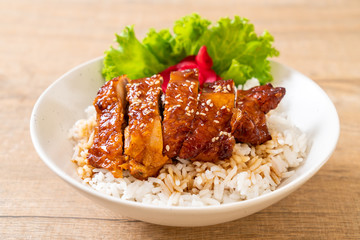

chicken Teriyaki

Description
This teriyaki chicken is glazed with garlic sauce and ginger, best serve over cooked rice.
Ingridients:
- 1 pound skinlless, boneless chicken breast
- 1/2 cup reduced-sodium soy sauce
- 1/4 cup brown sugar
- 2 tablespoons honey
- 4 cloves garlic, grated, mashed to a paste
- 1 tablespoon grated fresh ginger, mashed to a paste
- 1 tablespoon sesame oil
- 1 teaspoon cornstarch
- 3 green onions, sliced diagonally (for garnished)
- 1 teaspoon sesame seeds (for garnished)
Steps:
- Gather all ingridients
- Trim chicken breast of any visible fat, then cut chicken into 1 1/2-inch pieces. Set aside.
- Add soy sauce, brown sugar, and honey to a bowl. Use a microplane grater to grate garlic and ginger, mash until a paste forms, and add to the bowl. Stir in sesame oil.
- Pour half the marinade mixture into a resealable plastic bag; reserve remaining marinade. Add the chciken pieces into the bag, seal the bag, and refigerate for 1 hour.
- Preheat an air fryer to 400 degrees F for 5 minutes. Remove chicken from marinade, discard any marinade in the bag, and air fry chicken until no longer pink at the center and juices run clear, about 10 minutes.
- Meanwhille ad reserved marinade to a large skillet and whisk in cornstarch until smooth; cook over medium-high heat until thcikened, about 5 minutes. Add in chicken; toss until coated. Garnish with green onions and sesame seeds and server immediately on top a cooked rice.
- Chicken teriyaki is ready to be eaten up.
Back